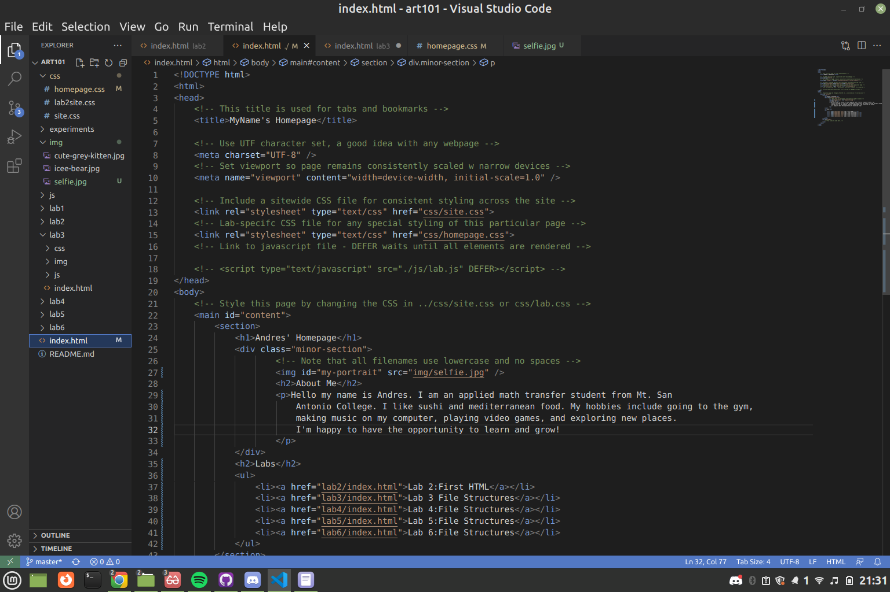
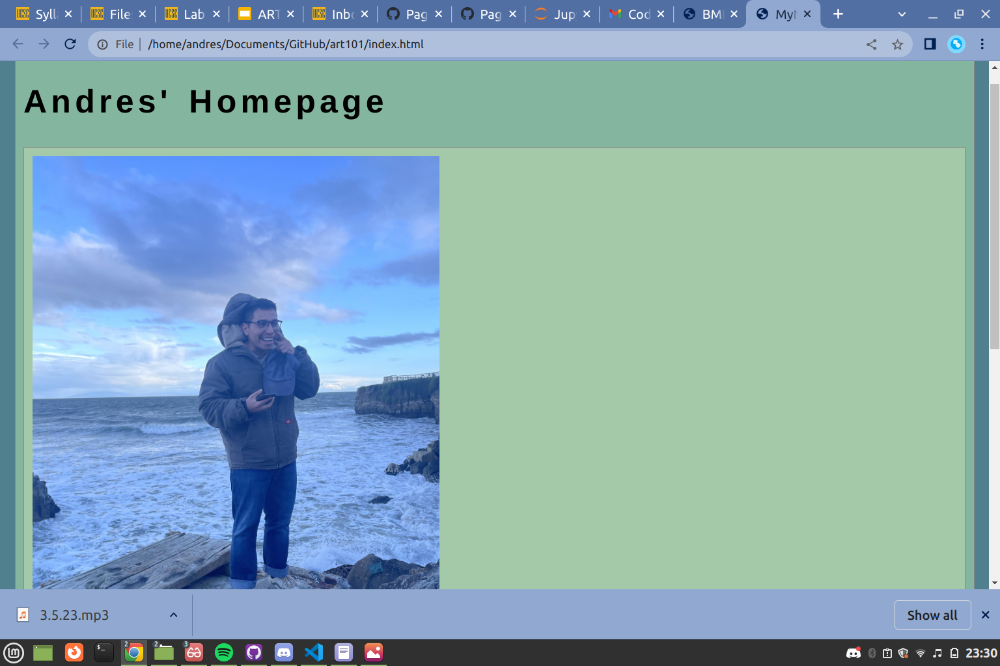
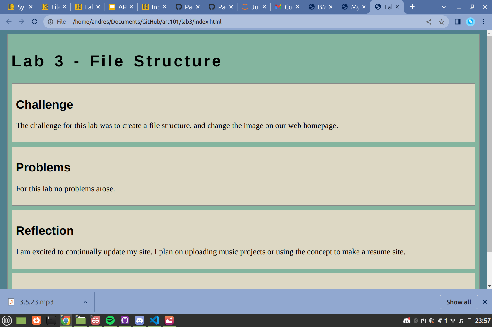

Lab 3 - File Structure
Challenge
The challenge for this lab was to create a file structure, and change the image on our web homepage.
Problems
For this lab no problems arose.
Reflection
I am excited to continually update my site. I plan on uploading music projects or using the concept to make a resume site.
Screenshots
Homepage index html file
Homepage
Lab 3 page
Results
By the end of this lab we made a list on the homepage linking to the other labs and observed the importance of clean organized directories.